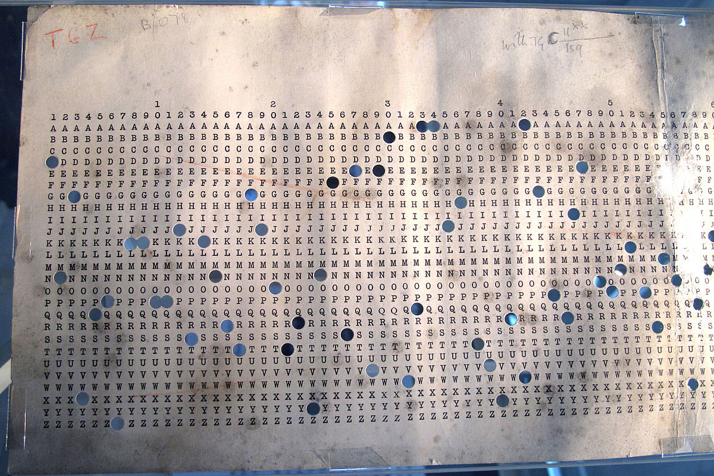
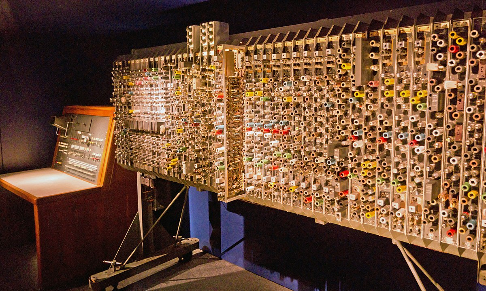

Bombe:
El bombe era un dispositivo electromecánico (un ordenador de uso específico) usado por los criptólogos británicos para ayudar a descifrar las señales cifradas por la máquina alemana Enigma durante la Segunda Guerra Mundial. La Armada y el Ejército de los Estados Unidos produjeron máquinas con la misma especificación funcional, pero diseñadas de una manera diferente.
El diseño inicial del bombe fue producido en 1939 en el Government Code and Cypher School en Bletchley Park por Alan Turing, con un importante refinamiento ideado por Gordon Welchman. El diseño de ingeniería y la construcción fue el trabajo de Harold Keen de la British Tabulating Machine Company. Era un desarrollo substancial de un dispositivo que había sido diseñado en 1938 por el criptologista polaco Marian Rejewski del Biuro Szyfrów, y conocido como la «bomba criptológica» (del polaco: "bomba kryptologiczna").
La función del bombe era descubrir algunos de los ajustes diarios de las máquinas Enigma en las varias redes militares alemanas: específicamente, el conjunto de rotores en uso y sus posiciones en la máquina; los ajustes de los anillos del alfabeto; y uno de los cableados del plugboard.

Banburismus:
Banburismus fue un proceso criptoanalítico desarrollado por Alan Turing en Bletchley Park en Gran Bretaña durante la Segunda Guerra Mundial . Fue utilizado por Bletchley Park's Hut para ayudar a descifrar los mensajes (navales) de la Kriegsmarine alemana cifrados en las máquinas Enigma . El proceso utilizó probabilidad condicional secuencial para inferir información sobre los ajustes probables de la máquina Enigma. Dio lugar a la invención de Turing de la prohibición como una medida del peso de la evidencia a favor de una hipótesis. Este concepto se aplicó más tarde en Turingery y todos los demás métodos utilizados para descifrar el cifrado de Lorenz . Banburismus
El objetivo de Banburismus era reducir el tiempo requerido de las máquinas Bombe electromecánicas identificando las ruedas centrales y derechas más probables del Enigma . Hut 8 realizó el procedimiento continuamente durante dos años, deteniéndose solo en 1943 cuando se dispuso de suficiente tiempo de bombeo. Banburismus fue un desarrollo del " método del reloj " inventado por el criptoanalista polaco Jerzy Różycki . Hugh Alexander fue considerado el mejor de los banburistas. Él e IJ Good consideraron el proceso más un juego intelectual que un trabajo. "No fue lo suficientemente fácil para ser trivial, pero no lo suficientemente difícil como para causar un ataque de nervios".

Automatic Computing Engine:
ACE (Automatic Computing Engine) fue uno de los primeros diseños de ordenador con capacidad para el uso de programas almacenados en memoria. Fue desarrollado por Alan Turing por invitación de John R. Womersley, superintendente de la División de Matemáticas del Laboratorio Nacional de Física del Reino Unido. El uso de la palabra Engine se utilizó en homenaje a Charles Babbage y a sus dos invenciones, la máquina diferencial y la máquina analítica. El diseño técnico de Turing de la Proposed Electronic Calculator fue el producto de su trabajo teórico On Computable Numbers publicado en 1936 y de su experiencia durante la guerra en Bletchley Park, donde los ordenadores Colossus habían tenido éxito al romper los códigos militares alemanes. En su artículo de 1936, Turing describió su idea como "una máquina de computación universal".
